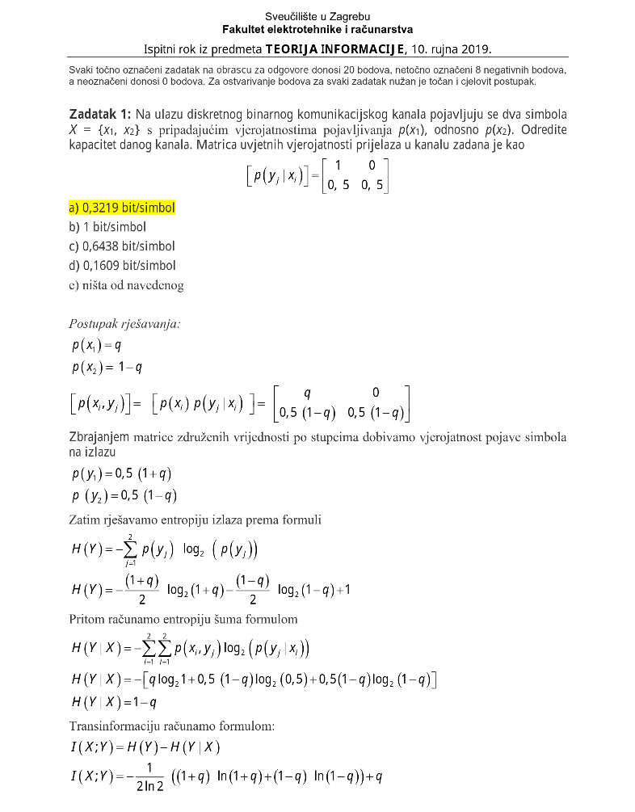
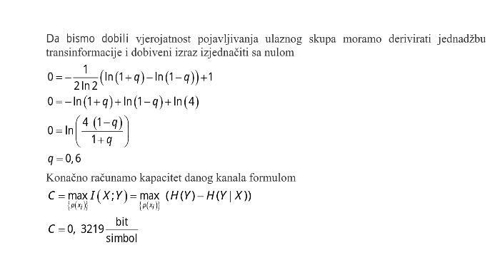

Znači više puta rješavam ovakve zadatke i uvijek mi fali .3 ili 2. decimala, oni su rješavali na drugačiji način, al kuži li netko di je greška u mojem postupku, tj di mi fali druga decimala?


C=max(I(X,Y))=max(H(X) - H(X|Y))
H(X) je max. ako su ulazi jednako vjerojatni P(Xi) = \left[ \begin{matrix} 0.5 & 0.5 \end{matrix} \right]
P(Xi,Yj) = \left[\begin{matrix} 0.5 & 0 \\ 0.25 & 0.25 \end{matrix} \right]
Iz čega možemo dobit:
P(Xi | Yj) = \left[\begin{matrix} 0.666 & 0 \\ 0.333 & 1 \end{matrix} \right]
Preko formule se dobije:
H(X | Y) = 0.6895
i odgovor:
C=H(X) - H(X|Y) = 1 - 0.6805 = 0.3105
Službeno je 0.3219, kuži netko di je ta razlika?